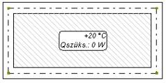
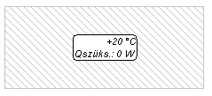
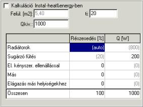
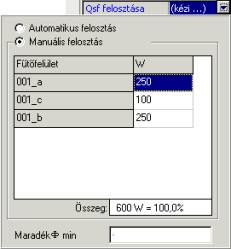

Kétféle grafikus helyiség létezik a programban. Az egyik fajta a falakkal körülvett zárt térségbõl keletkezõ helyiség, ilyen térség létrehozása után a program automatikusan felismeri az új objektumot – a helyiséget. Másik fajtája az eszközsávból kiválasztott és a sokszög alakú helyiség formájának körvonalaként megrajzolt elem. Ilyen esetben a helyiség méretezések tárgyát képezheti az Instal-heat&energy programban, de az összes falat, ablakot és ajtót meg kell adni, mint táblázatos elemet, vagyis mint a grafikus szerkesztõvel grafikus kapcsolatban nem állóelemet.
! Ajánlatos egy tervben csak egyféle helyiséget alkalmazni.
A helyiség kulcsfontosságú elem a felületfûtés installációja szerkesztésének fázisában, csak helyiségbe lehet fûtõfelületet betenni. Mindkét fajta helyiség azonos adatokkal rendelkezik a táblázatban. A helyiség adatainak nagy jelentõsége van a méretezések során, ezért érdemes a kellõ figyelmet szentelni nekik.
Nyomógombja az „Elemek” eszközsávban:
Látványa a képernyõn:
 
falakból felépített helyiség az eszközsávról beállított helyiség
A „Helyiség” elem adatai:
Hely. szimbóluma
Szöveges mezõ. A helyiség szimbóluma leíró jellegû és a helyiség azonosítására szolgál az eredménytábla szerkesztése során.
Címke
Szöveges mezõ. A helyiséget jellemzõ címke.
ti/qi [0C]
Numerikus mezõ. A helyiség belsõ hõmérséklete. Alapértelmezett értéke a terv általános adataiban van meghatározva.
ti/qi alul [0C]
Numerikus mezõ. A padlófûtés tervezésénél alkalmazott alul levõ hõmérséklet. Konkrét hõmérséklet beírása ebben a fázisban azt eredményezi, hogy az ehhez a helyiséghez tartozó FF adatainak megfelelõ mezõi nem kerülnek szerkesztésre, az itt megszabott érték rendelõdik hozzá a FF adataihoz.
Ha a „ti/qi alul" mezõbe „-” jel kerül beírásra, akkor a hõmérséklet nem kerül hozzárendelésre és a helyiség minden FF-éhez más alul levõ hõmérsékletet lehet kiválasztani.
Q/F
Numerikus mezõ. A helyiség (teljes) hõigényének értéke. Mivel a a számításhoz a hõveszteségnek a fûtõpadló, vagy fûtõfal által okozott részével csökkentett veszteséget kell figyelembe venni, ennek az értéknek nincs jelentõsége a számításban, csak tájékoztató jellegû. A mezõ maradhat kitöltetlenül. Ha a helyiség hõveszteségszámításai az Instal-heat&energy-ben történnek, az adattáblában megjelenik a kiszámított érték.
Q kiv/Fkiv
Komplex mezõ. A helyiség hõleadóinak megkövetelt teljesítménye. A redukált Q/F (a helyiség hõigénye csökkentve a hõveszteség fûtõpadlón vagy a fûtött falon fellépõ részével) megnövelve a szétosztott hõszükséglettel más helyiségekbõl, amelyekben a Felhasználó megadta a hõveszteség felosztását más helyiségek felé. A radiátoros fûtés, felületfûtés és esetleges egyéb fûtõtestek összegzett hõteljesítményének fedeznie kell ezt az értéket. A mezõt kötelezõ kitölteni.
A mezõ jobb oldalán egy nyíl található, amellyel kinyitható a Qkiv/F szerkesztõablaka. Ebben az ablakban lehet megadni, hogy a helyiség hõveszteségének kiszámítása az Instal-heat&energy-ben történjen-e. Szintén kitölthetõk a helyiség fûtésének fajtáira és a hõveszteségben való százalékos arányukra vonatkozó adatok, valamint megadható a hõeloszlás az adott helyiségben.

FF részarány [%]
Numerikus mezõ. A felületfûtés százalékos részaránya a teljes helyiség hõleadói megkövetelt teljesítményének (Qkiv/F) fedezetén belül. Alapértelmezésben az érték (auto)-ra van beállítva. Ilyen esetben, ha a helyiségben van felületfûtés és radiátoros fûtés is, a program igyekszik a hõigény minél nagyobb részét a FF által fedezni, a veszteség fennmaradó része figyelembevételre kerül a radiátorok megválasztásakor. A Felhasználó megszabhat más értéket.
Qff/Fff
Numerikus mezõ. A helyiség felületfûtésének a Qkiv/Fkiv és a FF részarányának alapján kiszámított megkövetelt teljesítménye. Ez az érték jelenti a kiindulópontot a kiválasztáshoz. Lehetõség van az érték kézi megszabására, ilyen esetben a FF részaránya átszámításra kerül.
Rad. részarány [%]
Numerikus mezõ. A radiátoros fûtés százalékos részaránya részaránya a teljes helyiség hõleadói megkövetelt teljesítményének (Qkiv/Fkiv) fedezetén belül. Alapértelmezésben az érték (auto)-ra van beállítva. Ilyen esetben, ha a helyiségben van felületfûtés és radiátoros fûtés is, a program igyekszik a hõigény minél nagyobb részét a FF által fedezni, a veszteség fennmaradó része figyelembevételre kerül a radiátorok megválasztásakor. A Felhasználó megszabhat más értéket.
Qrad/Frad
Numerikus mezõ. A helyiség radiátoros fûtésének a Qkiv/Fkiv és a rad. részarányának alapján kiszámított megkövetelt teljesítménye. Ez az érték jelenti a kiindulópontot a kiválasztáshoz. Lehetõség van az érték kézi megszabására, ilyen esetben a rad. részaránya átszámításra kerül.
Helyis.fel. a belv.
Numerikus mezõ. A helyiség belsõ felülete. A zárójelben szereplõ érték a program által a rajzról leolvasott felületet jelenti. Felülírható megszabott értékkel. A leolvasott értékhez való visszatérés céljából „?” jelet kell beírni és meg kell nyomni az Enter-t.
Fel. a teng.ben
Numerikus mezõ. A helyiség tengelyekben mért felülete A zárójelben szereplõ érték a program által a rajzról leolvasott felületet jelenti. Felülírható megszabott értékkel, a leolvasott értékhez való visszatérés céljából „?” jelet kell beírni és meg kell nyomni az Enter-t.
FF adatainak megjelenítése
Választómezõ. Lehetõvé teszi a kijelzés megváltoztatását a FF adattáblájában Alapértelmezésben a mezõben „Nem” van beállítva. Az érték „Igen”-re változtatása után a táblázatban a FF adatait tartalmazó további mezõk jelennek meg.
A padlófûtés további adatmezõi:
Qff/Fff eloszlás ...
Komplex mezõ. A hõveszteség (Qff/Fff) eloszlásának módja a helyiségbe bevitt FF-ek között. A mezõ csak több FF-nek a helyiségbe történõ bevezetése után szerkeszthetõ. Az alapértelmezett beállítás (auto) azzal jár, hogy a program automatikusan szétosztja a veszteséget az adott helyiségben rendelkezésre álló FF-ek között. Kézi elosztás végrehajtása céljából le kell gördíteni az alul elhelyezkedõ ablakot, „Kézi elosztás"-ra kell változtatni a beállítást, és úgy kell elosztani a veszteséget, hogy az összege 100% legyen. A zárójelben szereplõ értékek azt jelentik, hogy e FF-ek számára a veszteségrész automatikusan meghatározásra kerül. Ennek következtében a megkövetelt teljesítményt csak a helyiség FF-einek csak egy részére lehet kiosztani, a Q/F fennmaradó részét pedig a program osztja szét a fennmaradó FF-ek között.

Az ablak alsó részén található a „Fennmaradó Q/F min:” mezõ, amely a Q/F azon minimális értékét mutatja, amely biztosan nem kerül lefedésre a padlófûtés által. A mezõ értéke a bevitt FF-ek felülete és a részükre hozzáférhetõ Tpf/Fpf max. alapján kerül kiszámításra, amelyek meghatározzák a maximális (elméletileg elérhetõ) FF teljesítményt ebben a helyiségben. Ha ez az érték kisebb a Qff/Fff-tõl, a „Fennmaradó Q/F min:” mezõ kitöltõdik.
Helyis. fajtája ...
Választómezõ. A helyiség fajtája a felhasználás módja szempontjából. Az itt választott opciótól függõen kerül meghatározásra az alul elhelyezett mezõknek a padló felülete maximális hõmérsékletével kapcsolatos tartalma, ami döntõ befolyással van a padlófûtés megválasztására. A mezõben választható opciók a gyártótól kijelöltektõl függnek és a fûtõrendszer beolvasott katalógusától függõen változhatnak. Választható az „Egyéb" opció is, amely lehetõvé teszi tetszõleges egyéb helyiségtípus meghatározását, a választhatókon kívül. Az „Egyéb" opcióhoz az alábbi „tpp/qpp max. ..." mezõk szerkeszthetõk, tehát tetszõlegesen meghatározható a padló megengedett legnagyobb hõmérséklete.
Szobai termosztát (opcionális mezõ)
Választómezõ. A helyiségben található szobai termosztát típusa. A választólista tartalma az általános adatoknál választott automatika-rendszertõl függ.
tpf/qpf max.BZ
Numerikus mezõ. A padlófelület legnagyobb hõmérséklete a belsõ zónában. A mezõben látható érték a helyiség fentebb kiválasztott fajtájától és a gyártó által kijelöltektõl függ. Abban az esetben, ha az „Egyéb" helyiségfajta kerül kiválasztásra, a mezõ tartalma szerkeszthetõ, egyéb esetekben tájékoztató jellegû.
tpf/qpf max.kPZ
Numerikus mezõ. A padlófelület legnagyobb hõmérséklete az önálló kört alkotó peremzónában. A mezõ jellemzõit lásd a „tpf/qpf max.BZ” mezõ fenti leírását.
tpf/qpf max.ePZ
Numerikus mezõ. A padlófelület legnagyobb hõmérséklete a kör elején létrehozott peremzónában. A mezõ jellemzõit lásd a „tpf/qpf max.BZ” mezõ fenti leírását.
tpf//qpf max.sPZ
Numerikus mezõ. A padlófelület legnagyobb hõmérséklete a vezetékek lerakásának sûrítésével létrehozott peremzónában. A mezõ jellemzõit lásd a „tpf/qpf max.BZ” mezõ fenti leírását.
Bekötések ...
Komplex mezõ. A mezõ kijelzi az adott helyiségben található összes FF-en áthaladó bekötés összesített hosszúságát. A táblázat részletes leírása a 6.5.3 fejezetben található.
Címke fajtája
Választómezõ. A rajzon található helyiség címkéjének fajtáját lehet listáról kiválasztani. A „Konfiguráció” választása után kinyílik az elemek megjelenését tartalmazó ablak, amelyben (másolás útján) létrehozható és konfigurálható az elemek rajzon való megjelenése. Ez az új címke megadása után választható a táblázat legördülõ listájában.
Címke a nyomtatásban
Választómezõ. Lehetõvé teszi a helyiség címkéjét tartalmazó mezõ kikapcsolását a nyomtatásból. Ha a mezõ a „Nem " opcióra van beállítva, akkor a helyiség címkéje csak a szerkesztés során lesz látható, de nem lesz látható a nyomtatási képen, és nem kerül kinyomtatásra.